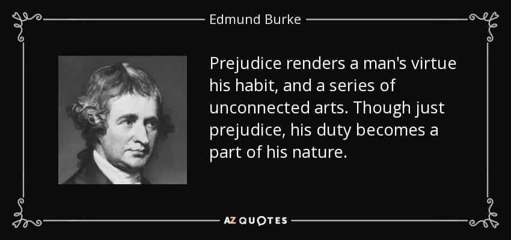

Prejudice is one of those words that are associated with negative thoughts, opinions, and behaviors. Its connotation is linked to something inferior, intolerant, bad and stupid, like a petty-minded person.
But he who is well-informed about history, philosophy, and possesses street-smartness, realizes that prejudices are some of the best and educated assets in a man’s life. Here’s why.
1. Prejudice equates with wisdom
In the conservative tradition of the Irishman Edmund Burke, history and philosophy are closely connected. Earlier generations knew a great deal about various phenomena, and to ignore their valuable experiences of the past would be a great mistake. Burke stresses:
Instead of casting away all our old prejudices, we cherish them to a very considerable degree, and, to take more shame to ourselves, we cherish them because they are prejudices; and the longer they have lasted and the more generally they have prevailed, the more we cherish them. We are afraid to put men to live and trade each on his own private stock of reason; because we suspect that this stock in each man is small, and that the individuals would do better to avail themselves of the general bank and capital of nations and of ages.
For example, although the earlier notions of women might be exaggerated, incomplete and partly flawed, they nevertheless include some underlying truth. Contemporary research in psychology shows that females are more neurotic, emotional and less rational than men, which is pretty much only a more nuanced confirmation of what those before already knew.
Prejudices do not imply that nothing can or should be changed, and it is the duty of our generation to filter out that which is not worthy to hold on to. Still the wise man knows to absorb the wisdom of earlier generations.

2. Prejudice is a legit philosophical position
If one goes a bit beyond the prejudical wisdom, one realizes that prejudices form every person who tries to understand society and the world. In the German philosopher Hans-Georg Gadamer’s work Truth and Method, he notes that prejudices are what forms our thinking and our interpretations of various new phenomena in our world that we encounter. Our particular tradition helps us to give it a meaning and at least a preliminary understanding. Therefore we cannot just let our “pure reason” guide us, like some of the Enlightenment scholars and neoconservative ideologists have asserted.
Let’s say that a blue-haired fat activist showed up somewhere in England in the 15th century. The people might have thought that it was some sort of demon from the underworld that manifested itself. While us contemporaries, on the other hand, know that it’s just another blue-haired beast, another degenerate sign of the times. Ergo: we cannot escape the particular historical horizon from which we understand things in the world.

3. Prejudice is the same as street-smartness and good decision-making
Like Steven Pinker claims in a passage of his extensive work The Better Angels of Our Nature, stereotypes and averages indeed are true. Blacks really are more prone to being welfare recipients. The fact that we should not essentialize entire groups is beside the point.
I remember when I visited Los Angeles for the first time in 2006. I took a Greyhound bus and spoke to a decent black guy in his 20s all the way to San Diego. Thus I have absolutely nothing against blacks as individuals, and as a larger population group I hope that they will do better in the future. Nevertheless, it was also wise of me to turn around after having just entered a metro station full of black males in their late teens in downtown L.A.
As John Derbyshire rightly noticed in his infamous article in Takimag, a white or northeast Asian person should avoid large groups of blacks, since they might be annoying at best or hostile at worst. Females, on the other hand, should know that to travel alone in unsafe countries is not very wise. Edmund Burke again:
Prejudice is of ready application in the emergency; it previously engages the mind in a steady course of wisdom and virtue, and does not leave the man hesitating in the moment of decision, skeptical, puzzled and unresolved. Prejudice renders a man’s virtue his habit; and not a series of unconnected acts. Through past prejudice, his duty becomes part of his nature.

The important thing is to look at what research and common sense say, so that our selective prejucides do not misguide us. Given that a man is relatively flexible in his way of thinking and acting, to hold on to prejudices can make up an excellent method to avoid dangerous situations and make decisions in accordance with such clever and virtuous principles.
Read More: Why You Should Not Be Afraid Of Selective Prejudice